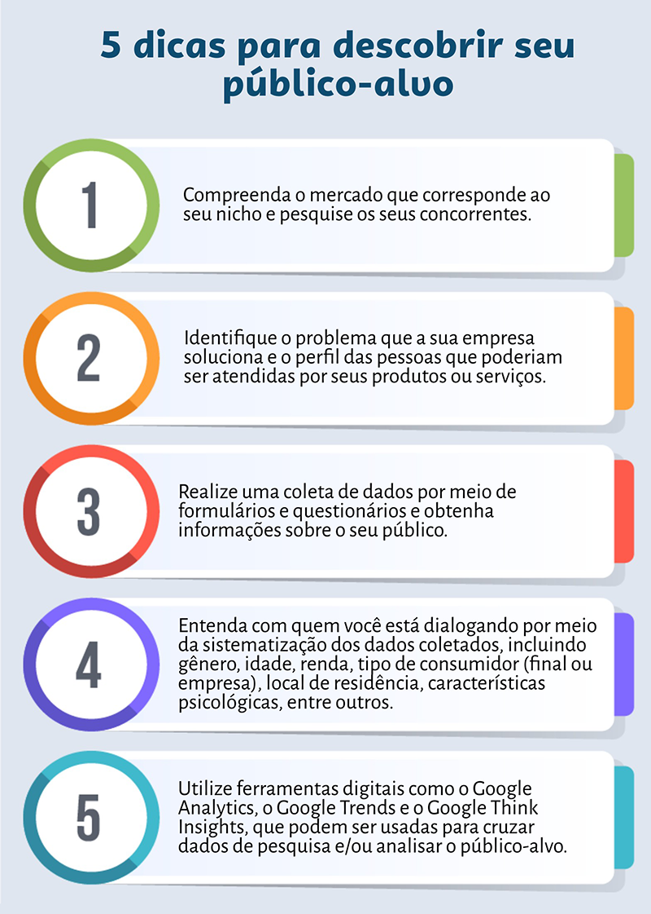

Dicas
Definir Objetivos Claros: Antes de iniciar qualquer estratégia digital, é essencial definir objetivos claros e mensuráveis. Isso pode incluir aumentar a visibilidade da marca, gerar leads, aumentar as vendas, fortalecer o relacionamento com os clientes, entre outros. Ter objetivos claros ajudará a direcionar suas estratégias e medir o sucesso ao longo do tempo.
Conhecer o Público-Alvo: É crucial entender quem é o seu público-alvo. Realize pesquisas de mercado, análise de dados e crie personas do cliente para obter informações detalhadas sobre as características demográficas, interesses, comportamentos e necessidades do seu público. Com esse conhecimento, você poderá personalizar suas estratégias para alcançar e envolver seu público de maneira mais eficaz.
Desenvolver um Website Profissional: Um website é o centro da presença digital de uma empresa. Certifique-se de que seu website seja profissional, atraente, responsivo e fácil de navegar. Otimize-o para os motores de busca, tornando-o amigável aos mecanismos de pesquisa e garantindo que o conteúdo seja relevante e útil para os visitantes.
Marketing de Conteúdo: O marketing de conteúdo desempenha um papel fundamental na construção de uma presença digital sólida. Crie e compartilhe regularmente conteúdo relevante e valioso, como artigos, blogs, vídeos, infográficos, e-books, webinars e podcasts. O conteúdo de qualidade atrairá seu público-alvo, estabelecerá sua expertise e fortalecerá o relacionamento com seus clientes.
SEO (Search Engine Optimization): O SEO é essencial para garantir que seu website e conteúdo sejam encontrados pelos motores de busca. Realize pesquisas de palavras-chave relevantes para o seu setor e incorpore-as estrategicamente em seu conteúdo, títulos, tags e meta descrições. Otimize a velocidade do site, a estrutura do URL e a usabilidade para melhorar a classificação nos motores de busca.
Estratégias de Redes Sociais: As redes sociais são canais poderosos para se conectar e engajar com seu público. Identifique as plataformas de redes sociais mais relevantes para o seu público-alvo e desenvolva uma estratégia consistente. Crie conteúdo envolvente, interaja com os seguidores, participe de grupos e comunidades relevantes e use anúncios pagos para ampliar seu alcance.
Email Marketing: O email marketing continua sendo uma estratégia eficaz para alcançar e nutrir leads e clientes. Construa uma lista de emails segmentada e envie regularmente newsletters, atualizações, promoções e conteúdo exclusivo. Personalize suas mensagens, automatize sequências de emails e acompanhe as métricas para avaliar a eficácia das suas campanhas.
Marketing de Influência: O marketing de influência é uma estratégia poderosa que envolve a colaboração com influenciadores digitais para promover sua marca, produtos ou serviços. Com o marketing de influência, você pode aproveitar a credibilidade e o alcance dos influenciadores para alcançar um público mais amplo e construir confiança em torno da sua marca. Ao identificar os influenciadores relevantes para o seu nicho e estabelecer parcerias autênticas, você pode aproveitar o poder das recomendações e do conteúdo gerado pelos influenciadores para aumentar o engajamento, gerar leads qualificados e impulsionar as vendas. É importante selecionar influenciadores que estejam alinhados com os valores e objetivos da sua empresa, garantindo assim uma campanha autêntica e eficaz.
Dicas de Venda
Sabe-se que aumentar as vendas e alcançar um público mais amplo são objetivos inegavelmente cruciais para empresas de todos os portes. Reconhecendo a importância dessas metas, no vídeo abaixo serão compartilhadas informações valiosas sobre como alcançar um público maior e impulsionar o crescimento das vendas. Serão exploradas estratégias sólidas e comprovadas que podem ser aplicadas em diferentes setores e mercados.
Durante essa experiência enriquecedora, os espectadores terão a oportunidade de adquirir conhecimentos aprofundados sobre como expandir a presença de uma empresa no mercado e, consequentemente, impulsionar seu crescimento nas vendas. Serão discutidos uma variedade de táticas e abordagens cuidadosamente selecionadas, com o objetivo central de atrair um público mais amplo e estabelecer conexões significativas com os consumidores.
É importante ressaltar que as estratégias abordadas serão respaldadas por exemplos práticos e estudos de caso, ilustrando sua aplicação bem-sucedida em diferentes contextos de negócio. Essas informações valiosas poderão ser utilizadas como um guia prático para impulsionar o crescimento das vendas, fortalecer a posição da empresa no mercado e alcançar resultados significativos a curto e longo prazo.
Recursos e Ferramentas
Análise de Redes
Google Analytics: O Google Analytics é uma ferramenta de análise amplamente utilizada no marketing digital para obter insights detalhados sobre o tráfego de um site, o comportamento dos usuários e o desempenho das campanhas de marketing.
Essa poderosa ferramenta fornece uma visão abrangente do público-alvo que visita o site, incluindo informações demográficas, interesses e localização geográfica dos usuários. Ela também oferece dados precisos sobre o número de visitantes, páginas visualizadas, tempo de permanência no site e taxa de rejeição, permitindo compreender o envolvimento dos usuários.
Uma das principais funcionalidades do Google Analytics é o rastreamento das fontes de tráfego, ou seja, de onde os visitantes estão chegando ao site. Isso inclui análise de canais como pesquisa orgânica, mídia paga, referências de outros sites e redes sociais. Essa informação é fundamental para avaliar a eficácia das estratégias de aquisição de tráfego e otimizar os esforços de marketing.
Além disso, o Google Analytics oferece insights valiosos sobre o comportamento dos usuários dentro do site. É possível analisar as páginas mais visitadas, os caminhos de navegação dos usuários, eventos e conversões realizadas. Essas informações permitem identificar pontos fortes e fracos do site, entender o interesse dos usuários e melhorar a experiência do visitante para aumentar as chances de conversão.
A ferramenta também permite a definição de metas personalizadas, como a conclusão de um formulário ou a visualização de uma página específica, e rastreia o progresso em relação a essas metas. Isso possibilita uma análise mais detalhada do desempenho das campanhas e a avaliação do retorno sobre o investimento (ROI) de diferentes iniciativas de marketing.
Em resumo, o Google Analytics é uma ferramenta essencial para profissionais de marketing e proprietários de sites que desejam compreender melhor o desempenho de suas estratégias online. Ao fornecer insights valiosos sobre o tráfego, o comportamento dos usuários e a eficácia das campanhas, o Google Analytics auxilia na tomada de decisões embasadas, na otimização de estratégias e no crescimento das empresas no ambiente digital.
Go to Google AnalyticsHootsuite: O Hootsuite é uma plataforma de gerenciamento de redes sociais que permite que indivíduos e empresas centralizem e otimizem suas estratégias nas mídias sociais. Com recursos abrangentes e funcionais, essa ferramenta simplifica o processo de gerenciamento de contas em várias redes sociais.
Com o Hootsuite, é possível agendar postagens em diferentes plataformas, como Facebook, Twitter, Instagram e LinkedIn, facilitando o planejamento e a programação antecipada de conteúdo. Essa funcionalidade ajuda a economizar tempo e garante uma presença consistente nas redes sociais.
Além disso, o Hootsuite possibilita o monitoramento e a interação com menções e comentários relacionados à marca nas redes sociais. Os usuários podem acompanhar o engajamento com suas postagens, responder a comentários e mensagens, e monitorar a reputação da marca em diversas plataformas.
A plataforma também oferece recursos de análise para avaliar o desempenho das campanhas nas redes sociais. Métricas detalhadas sobre o alcance das postagens, envolvimento do público e crescimento de seguidores estão disponíveis para os usuários. Essas informações auxiliam na avaliação do sucesso das estratégias de marketing e na tomada de decisões informadas para aprimorar o desempenho nas redes sociais.
Além disso, o Hootsuite promove a colaboração entre equipes, permitindo atribuir tarefas, compartilhar conteúdo e coordenar atividades relacionadas às redes sociais. Com essa funcionalidade, equipes podem trabalhar de forma conjunta e eficiente no gerenciamento das redes sociais.
No geral, o Hootsuite é uma plataforma eficiente e abrangente para gerenciamento de redes sociais. Ele simplifica o gerenciamento de contas em diversas plataformas, oferece recursos de agendamento, monitoramento e análise, e promove a colaboração entre equipes. Essa ferramenta facilita o processo de gerenciamento de campanhas nas redes sociais, tornando-o mais eficiente.
Go to HootsuiteAutomação de Marketing
HubSpot: O HubSpot é uma plataforma abrangente de automação de marketing que oferece uma variedade de recursos para impulsionar estratégias de marketing e melhorar o relacionamento com os clientes. Com uma abordagem integrada, essa plataforma fornece ferramentas poderosas para criação de landing pages, gerenciamento de leads, envio de emails automatizados e análise de desempenho de campanhas.
Uma das principais funcionalidades é a criação de páginas de destino atrativas e otimizadas, sem a necessidade de conhecimentos avançados em programação. O editor intuitivo permite personalizar o design, adicionar formulários de captura de leads e otimizar o conteúdo para melhores conversões.
O HubSpot também oferece recursos de gerenciamento de leads, permitindo capturar informações sobre visitantes do site e acompanhá-los ao longo do funil de vendas. Com segmentação e categorização de leads, é possível criar fluxos de trabalho automatizados para nutrição e envio de emails personalizados com base em interações dos leads.
Além disso, a plataforma possui um sistema de email marketing integrado, permitindo criar e enviar campanhas de forma automatizada. Recursos avançados de segmentação permitem direcionar mensagens específicas para grupos de leads com base em critérios predefinidos. O HubSpot também fornece análises detalhadas sobre abertura, cliques e interações dos destinatários.
Para acompanhar o impacto das estratégias de marketing, o HubSpot oferece recursos de análise de desempenho. Com painéis e relatórios personalizáveis, é possível visualizar métricas importantes como tráfego do site, conversões, taxa de fechamento de vendas e ROI. Essas informações auxiliam na avaliação do sucesso das campanhas e na tomada de decisões embasadas para melhorar os resultados.
Além disso, o HubSpot oferece integrações com outras ferramentas e plataformas populares, permitindo uma gestão centralizada das atividades de marketing, desde CRM até automação de vendas e atendimento ao cliente.
Em resumo, o HubSpot é uma plataforma de automação de marketing que oferece recursos abrangentes para impulsionar estratégias de marketing e aprimorar o relacionamento com os clientes. Com ferramentas de criação de landing pages, gerenciamento de leads, email marketing e análise de desempenho, essa plataforma permite que as empresas otimizem suas campanhas, aumentem a eficiência e obtenham resultados tangíveis.
Go to HubspotMailchimp: O Mailchimp é uma plataforma líder de automação de email marketing que oferece recursos avançados para ajudar empresas e profissionais de marketing a alcançar seus objetivos de comunicação por email. Com uma interface intuitiva e poderosas ferramentas, essa plataforma simplifica o processo de criação, envio e gerenciamento de campanhas de email, proporcionando resultados eficazes.
Uma das principais características do Mailchimp é sua capacidade de criar campanhas de email altamente personalizadas. Com uma ampla seleção de modelos responsivos e personalizáveis, você pode criar facilmente emails visualmente atraentes, mesmo sem conhecimentos avançados em design. O recurso de arrastar e soltar permite adicionar facilmente conteúdo, imagens e botões para criar emails profissionais e envolventes.
O Mailchimp também se destaca pela segmentação avançada de listas de contatos. Você pode segmentar sua base de contatos com base em critérios como localização geográfica, histórico de compras, preferências do cliente e comportamento de engajamento. Essa segmentação permite que você envie mensagens altamente direcionadas e relevantes, aumentando a eficácia das suas campanhas.
Além disso, o Mailchimp oferece recursos de automação poderosos. Com a automação de funis, você pode configurar sequências de emails automatizadas com base em ações e comportamentos específicos do usuário. Isso permite que você nutra leads, acompanhe o progresso dos clientes em potencial e envie mensagens personalizadas em momentos estratégicos.
A plataforma também fornece análises detalhadas para monitorar o desempenho das suas campanhas de email. Você pode acessar métricas essenciais, como taxas de abertura, cliques e conversões, para avaliar o sucesso das suas estratégias de marketing. Essas informações ajudam a otimizar futuras campanhas e tomar decisões informadas com base nos dados.
Além disso, o Mailchimp oferece integrações com outras ferramentas e plataformas populares, como sistemas de CRM, plataformas de comércio eletrônico e redes sociais. Isso permite que você centralize suas atividades de marketing e aproveite os dados e informações de diferentes fontes para criar campanhas mais eficazes e consistentes.
Em resumo, o Mailchimp é uma plataforma abrangente de automação de email marketing que oferece recursos avançados para criar, enviar e gerenciar campanhas de email altamente personalizadas. Com recursos de personalização, segmentação, automação e análise de desempenho, o Mailchimp capacita profissionais de marketing a alcançar seu público-alvo de forma eficaz, aumentar o engajamento e obter resultados positivos em suas estratégias de email marketing.
Go to MailchimpOtimização de SEO
Yoast SEO: O Yoast SEO é um renomado plugin projetado para aprimorar o desempenho de otimização para mecanismos de busca no WordPress. Com uma variedade de recursos poderosos, essa ferramenta é amplamente utilizada por profissionais de marketing digital e proprietários de sites.
Com o Yoast SEO, você pode melhorar a visibilidade do seu site nos resultados de pesquisa. Ele oferece análises detalhadas do conteúdo das suas postagens e páginas, fornecendo sugestões valiosas para otimização. Isso inclui fatores como densidade de palavras-chave, legibilidade do texto e formatação adequada de títulos e descrições.
Além disso, o Yoast SEO permite personalizar facilmente as meta tags das suas postagens. Isso envolve a criação de títulos e descrições atraentes, que aumentam a probabilidade de cliques nos resultados de pesquisa. A otimização dessas informações é essencial para melhorar o tráfego orgânico do seu site.
Outra funcionalidade importante é a geração de sitemaps XML. Com o Yoast SEO, você pode criar sitemaps que ajudam os mecanismos de busca a entender melhor a estrutura do seu site. Isso facilita a indexação das páginas e a melhoria da visibilidade nos resultados de pesquisa.
O plugin também oferece recursos para otimização de URLs. Com ele, você pode personalizar as URLs das suas postagens, tornando-as mais amigáveis para os mecanismos de busca e fáceis de entender pelos visitantes. Isso contribui para uma melhor classificação nas pesquisas e uma experiência de usuário aprimorada.
O Yoast SEO possui integração com redes sociais, permitindo definir informações específicas para compartilhamento de conteúdo nas mídias sociais. Você pode personalizar títulos, descrições e imagens para garantir uma apresentação otimizada do seu conteúdo nessas plataformas.
Outro recurso valioso é a sugestão de links internos relevantes. O Yoast SEO analisa seu conteúdo e sugere links para outras páginas do seu site, fortalecendo a estrutura e melhorando a experiência de navegação.
Em resumo, o Yoast SEO é uma ferramenta essencial para aprimorar a otimização do seu site no WordPress. Com recursos avançados de análise de conteúdo, personalização de meta tags, geração de sitemaps XML, otimização de URLs, integração com redes sociais e sugestões de links internos, o Yoast SEO oferece uma abordagem abrangente para melhorar a visibilidade e o desempenho do seu site nos mecanismos de busca.
Go to Yoast SEOSEMrush: O SEMrush é uma suíte abrangente de ferramentas de SEO (Search Engine Optimization) que oferece uma variedade de recursos poderosos para impulsionar a visibilidade e o desempenho do seu site nos mecanismos de busca. Amplamente utilizado por profissionais de marketing digital e especialistas em SEO, o SEMrush fornece insights valiosos sobre palavras-chave, análise de concorrentes, auditoria de site e muito mais.
Uma das principais funcionalidades do SEMrush é a pesquisa de palavras-chave. Ele permite que você encontre palavras-chave relevantes para o seu nicho de mercado, identifique a concorrência em torno delas e descubra o volume de pesquisa e a tendência ao longo do tempo. Com essas informações, você pode desenvolver estratégias de conteúdo direcionadas, otimizando suas páginas para aumentar a classificação nos mecanismos de busca.
Além disso, o SEMrush oferece recursos avançados de análise de concorrentes. Você pode identificar quem são seus concorrentes diretos, analisar as palavras-chave que eles estão segmentando e descobrir as estratégias de SEO que estão sendo implementadas. Essas informações ajudam você a identificar oportunidades de otimização, encontrar lacunas no mercado e melhorar sua própria estratégia de SEO para superar a concorrência.
O SEMrush também possui recursos de auditoria de site, permitindo que você identifique problemas técnicos que podem afetar a visibilidade do seu site nos mecanismos de busca. Ele verifica aspectos como velocidade de carregamento, erros de rastreamento, tags duplicadas, links quebrados e muito mais. Ao corrigir esses problemas, você melhora a experiência do usuário e o desempenho do seu site nos mecanismos de busca.
Outro recurso importante do SEMrush é a análise de backlinks. Ele mostra os links que apontam para o seu site e fornece métricas relevantes, como autoridade de domínio e reputação dos sites de origem. Com essas informações, você pode identificar oportunidades de criação de links, avaliar a qualidade dos backlinks existentes e desenvolver uma estratégia eficaz de construção de links.
O SEMrush também oferece recursos de análise de tráfego, permitindo que você monitore o desempenho do seu site e identifique as fontes de tráfego mais relevantes. Ele fornece dados sobre visitantes únicos, tempo médio de visita, taxas de rejeição e muito mais. Essas informações são valiosas para avaliar o impacto das suas estratégias de SEO e ajustá-las conforme necessário.
Em resumo, o SEMrush é uma ferramenta abrangente de SEO que oferece uma ampla gama de recursos para impulsionar a visibilidade e o desempenho do seu site nos mecanismos de busca. Com funcionalidades como pesquisa de palavras-chave, análise de concorrentes, auditoria de site, análise de backlinks e monitoramento de tráfego, o SEMrush fornece insights valiosos e ajuda você a desenvolver estratégias eficazes de SEO para obter melhores resultados online.
Go to SEMrushDesign
Canva: O Canva é uma ferramenta online intuitiva e fácil de usar para criação de designs gráficos. Com o Canva, você pode criar uma variedade de conteúdos visuais, como posts para redes sociais, infográficos, cartões de visita, apresentações, convites e muito mais, mesmo sem habilidades avançadas em design.
Uma das principais vantagens do Canva é a sua ampla variedade de templates prontos para uso. Ele oferece milhares de modelos profissionais e personalizáveis em diferentes categorias, permitindo que você escolha o layout que melhor se adequa às suas necessidades. Esses templates são uma excelente base para criar designs visualmente atraentes, economizando tempo e esforço no processo de design.
Além dos templates, o Canva também disponibiliza uma extensa biblioteca de elementos visuais, como imagens, ilustrações, ícones e formas. Você pode explorar essa coleção e adicionar esses elementos aos seus designs, tornando-os mais atrativos e personalizados. O Canva também permite que você faça upload de suas próprias imagens e as incorpore aos seus designs.
A ferramenta de edição do Canva é intuitiva e fácil de usar. Ela oferece recursos como redimensionamento, recorte, ajuste de cores, sobreposição de textos e adição de filtros para aprimorar seus designs. Você pode adicionar textos personalizados com diferentes fontes, tamanhos e estilos, permitindo que você transmita suas mensagens de forma eficaz.
Outro destaque do Canva é a sua capacidade de colaboração. Ele permite que várias pessoas trabalhem simultaneamente em um mesmo projeto, facilitando o trabalho em equipe e a troca de ideias. Você pode compartilhar seus designs com outras pessoas para receber feedback e fazer ajustes conforme necessário.
Além disso, o Canva oferece integração com várias plataformas e redes sociais populares, como Facebook, Instagram, Twitter e YouTube. Isso torna mais fácil o processo de compartilhamento dos seus designs diretamente nas plataformas em que você deseja publicá-los.
O Canva está disponível em versões gratuita e paga. A versão gratuita oferece a maioria dos recursos essenciais, enquanto a versão paga, conhecida como Canva Pro, oferece recursos avançados, como acesso a uma biblioteca maior de elementos visuais, ferramentas de redimensionamento automático, suporte prioritário e muito mais.
Em resumo, o Canva é uma ferramenta poderosa e acessível para criação de designs gráficos. Com uma variedade de templates, elementos visuais e recursos de edição, o Canva permite que você crie designs visualmente atraentes mesmo sem experiência em design. É uma excelente opção para empresas, profissionais de marketing e qualquer pessoa que deseja criar conteúdo visual de qualidade com facilidade.
Go to CanvaAdobe Creative Cloud: O Adobe Creative Cloud é uma suíte abrangente de aplicativos e serviços desenvolvidos pela Adobe Systems. Essa plataforma é amplamente utilizada por profissionais criativos, como designers gráficos, ilustradores, fotógrafos e artistas digitais, para criar e aprimorar projetos visuais de alta qualidade.
Uma das principais características do Adobe Creative Cloud é a sua coleção de aplicativos profissionais, incluindo o Photoshop, Illustrator, InDesign, Premiere Pro, After Effects, entre outros. Cada um desses aplicativos tem funcionalidades específicas voltadas para diferentes áreas do design e da produção de conteúdo.
Além dos aplicativos, o Adobe Creative Cloud oferece recursos adicionais, como a Creative Cloud Libraries, onde você pode armazenar e compartilhar ativos, como cores, fontes, imagens e gráficos vetoriais. Essa funcionalidade facilita o acesso aos seus recursos personalizados em diferentes aplicativos e projetos.
Outro destaque do Adobe Creative Cloud é a integração entre os aplicativos e serviços. Os aplicativos têm uma excelente interoperabilidade, permitindo que você crie e edite projetos em diferentes programas e compartilhe recursos entre eles de maneira fácil e eficiente. Além disso, a plataforma oferece integração com o Adobe Stock, uma biblioteca de imagens, vídeos e recursos visuais de alta qualidade para uso em projetos criativos.
A assinatura do Adobe Creative Cloud oferece acesso aos aplicativos e serviços da Adobe, bem como atualizações contínuas e suporte técnico. A plataforma está disponível por meio de uma assinatura mensal ou anual, oferecendo diferentes opções de plano, como o plano individual, de equipe ou para estudantes e professores.
Em resumo, o Adobe Creative Cloud é uma poderosa suíte de aplicativos e serviços que fornece ferramentas indispensáveis para profissionais criativos. Com uma variedade de aplicativos especializados e recursos avançados, o Adobe Creative Cloud permite que os usuários desenvolvam projetos visuais de alta qualidade, desde edição de imagens e ilustrações até criação de vídeos e animações. É uma solução abrangente para todas as etapas do processo criativo.
Go to Creative CloudPalavras-Chave
Google Trends: O Google Trends é uma ferramenta fornecida pelo Google que permite analisar a popularidade e a tendência de pesquisa de determinadas palavras-chave ao longo do tempo. Com o Google Trends, os usuários podem acessar informações valiosas sobre o volume de pesquisa e o interesse do público em termos específicos, ajudando a entender as tendências de busca e a tomar decisões embasadas em relação ao conteúdo e estratégia de marketing.
A principal função do Google Trends é fornecer dados sobre a popularidade de palavras-chave e termos de pesquisa em diferentes períodos e locais geográficos. Ele exibe gráficos e dados numéricos que mostram como o interesse pelas palavras-chave mudou ao longo do tempo, permitindo que os usuários identifiquem picos de interesse sazonais, eventos relevantes ou mudanças de tendência. Essas informações podem ser úteis para ajustar a estratégia de conteúdo, identificar oportunidades de marketing e entender o comportamento do público-alvo.
Além disso, o Google Trends oferece recursos adicionais, como a comparação de termos de pesquisa. Os usuários podem inserir várias palavras-chave e comparar o interesse relativo entre elas, ajudando a identificar quais termos são mais populares ou relevantes para determinado nicho de mercado. Essa comparação pode auxiliar na seleção de palavras-chave para otimização de SEO, campanhas de marketing ou identificação de tendências emergentes.
Outra funcionalidade interessante do Google Trends é a capacidade de explorar variações e consultas relacionadas a uma palavra-chave específica. Isso permite descobrir termos relacionados ou sinônimos que podem ser relevantes para uma estratégia de conteúdo mais ampla, ajudando a diversificar e enriquecer o material produzido.
O Google Trends é uma ferramenta gratuita e acessível, que oferece insights valiosos sobre o comportamento de pesquisa dos usuários. Ao analisar a popularidade de palavras-chave, identificar tendências emergentes e comparar termos relevantes, os profissionais de marketing, jornalistas e outros usuários podem tomar decisões mais informadas e estratégicas em relação ao conteúdo, publicidade, pesquisa de mercado e muito mais. É uma ferramenta poderosa para entender e aproveitar o poder das buscas online.
Go to Google TrendsAhrefs: O Ahrefs é uma suíte de ferramentas de SEO (Search Engine Optimization) que oferece recursos abrangentes para análise e otimização de sites. É uma plataforma amplamente utilizada por profissionais de marketing digital, especialistas em SEO e proprietários de sites que desejam melhorar a visibilidade e o desempenho nos mecanismos de busca.
Uma das principais funcionalidades do Ahrefs é a análise de palavras-chave. Ele fornece informações valiosas sobre palavras-chave relevantes para o seu nicho de mercado, incluindo volume de busca, dificuldade de classificação, concorrência e tendências. Com esses dados, os usuários podem identificar palavras-chave estratégicas para otimizar seu conteúdo, melhorar sua classificação nos resultados de pesquisa e direcionar o tráfego qualificado ao seu site.
Além disso, o Ahrefs oferece recursos avançados de pesquisa de backlinks. Os backlinks são links de outros sites que apontam para o seu site, e eles desempenham um papel importante nos rankings dos mecanismos de busca. Com o Ahrefs, é possível identificar e analisar os backlinks do seu site, bem como dos concorrentes, para entender a qualidade, a quantidade e a relevância desses links. Essas informações ajudam na elaboração de estratégias de construção de links eficazes e na identificação de oportunidades para melhorar a autoridade do seu site.
Outro recurso do Ahrefs é a capacidade de monitorar o ranking do seu site nos mecanismos de busca ao longo do tempo. Você pode acompanhar a posição das suas palavras-chave-alvo e verificar se o seu site está subindo ou descendo nos resultados de pesquisa. Esses dados permitem que você avalie a eficácia das suas estratégias de SEO e faça ajustes conforme necessário.
Além disso, o Ahrefs oferece ferramentas para realizar auditorias completas de SEO do seu site, identificando problemas técnicos, erros de rastreamento, problemas de velocidade, otimização de meta tags e muito mais. Essas auditorias ajudam a melhorar a saúde do seu site e a garantir que ele esteja otimizado para obter uma melhor classificação nos mecanismos de busca.
Em resumo, o Ahrefs é uma poderosa ferramenta de SEO que fornece insights valiosos sobre palavras-chave, backlinks, classificação nos mecanismos de busca e auditoria de SEO. Com sua ampla gama de recursos, o Ahrefs ajuda os profissionais de marketing e os especialistas em SEO a otimizar seus sites, melhorar sua visibilidade online e impulsionar o tráfego orgânico.
Go to AhrefsEmail Marketing
MailerLite: O MailerLite é uma plataforma de email marketing que oferece recursos avançados para criar, enviar e gerenciar campanhas de email eficazes. É uma ferramenta popular entre profissionais de marketing, blogueiros, empreendedores e empresas que desejam estabelecer um relacionamento próximo com seus clientes por meio do email.
Uma das principais características do MailerLite é a facilidade de uso. A interface intuitiva e amigável permite que os usuários criem facilmente campanhas de email atraentes, mesmo sem conhecimentos avançados em design ou programação. A plataforma oferece uma ampla variedade de modelos de email personalizáveis, layouts responsivos e blocos de conteúdo pré-projetados, permitindo que você crie mensagens visualmente atraentes em questão de minutos.
Além disso, o MailerLite oferece recursos avançados de automação de email. Com a funcionalidade de automação, você pode criar sequências automatizadas de emails com base em ações específicas dos seus assinantes. Por exemplo, você pode configurar uma sequência de boas-vindas para novos assinantes, enviar emails segmentados com base no comportamento do usuário ou configurar lembretes automáticos para carrinhos abandonados em um site de comércio eletrônico. Essa automação ajuda a nutrir leads, engajar os assinantes e impulsionar as conversões.
O MailerLite também oferece recursos avançados de segmentação de audiência. Você pode segmentar sua lista de contatos com base em critérios específicos, como localização geográfica, histórico de compras, comportamento de navegação ou preferências do assinante. Isso permite que você envie mensagens personalizadas e relevantes para cada segmento da sua lista, aumentando a eficácia das suas campanhas de email.
Outro destaque do MailerLite é a capacidade de rastrear e analisar o desempenho das suas campanhas de email. A plataforma fornece estatísticas detalhadas, como taxa de abertura, taxa de cliques, taxa de conversão e cancelamento de inscrição, permitindo que você avalie o impacto das suas campanhas e tome decisões informadas para melhorar seus resultados. Além disso, o MailerLite integra-se com várias ferramentas de análise externas, como o Google Analytics, para fornecer insights ainda mais detalhados sobre o comportamento dos seus assinantes.
Em resumo, o MailerLite é uma plataforma de email marketing completa e fácil de usar, que oferece recursos avançados de criação, automação, segmentação e análise de campanhas de email. Com sua interface intuitiva e poderosas funcionalidades, o MailerLite ajuda você a construir relacionamentos significativos com seus assinantes, aumentar o engajamento e impulsionar o crescimento do seu negócio por meio do email marketing.
Go to MailerLiteConvertKit: O ConvertKit é uma plataforma de email marketing especialmente projetada para criadores de conteúdo, como blogueiros, podcasters, YouTubers e outros profissionais que desejam construir e nutrir relacionamentos com sua audiência por meio do email. É uma ferramenta popular que oferece recursos avançados de automação e segmentação, além de facilitar a criação e o envio de campanhas de email personalizadas.
Uma das principais características do ConvertKit é sua abordagem centrada em assinantes. A plataforma permite que você crie formulários de inscrição personalizados e pop-ups para capturar leads e expandir sua lista de contatos. Além disso, você pode segmentar sua audiência com base em vários critérios, como interesses, comportamento de navegação, histórico de compras e muito mais. Essa segmentação avançada permite que você envie mensagens altamente relevantes e direcionadas para cada segmento da sua lista, aumentando o engajamento e a eficácia das suas campanhas de email.
O ConvertKit também oferece recursos avançados de automação de email. Com a funcionalidade de automação, você pode criar fluxos de trabalho personalizados com base em eventos específicos, como a inscrição em uma lista, a compra de um produto ou o engajamento com determinado conteúdo. Por exemplo, você pode configurar um fluxo de boas-vindas automatizado para novos assinantes, enviar sequências de emails com base no interesse ou comportamento do assinante, ou até mesmo criar funis de vendas automatizados para promover seus produtos ou serviços. Essa automação ajuda a nutrir relacionamentos com sua audiência de forma eficiente e escalável.
Além disso, o ConvertKit oferece recursos avançados de personalização de emails. Você pode criar emails com conteúdo dinâmico, adaptando a mensagem com base nas preferências e ações do assinante. Isso permite que você ofereça uma experiência altamente personalizada e relevante para cada indivíduo da sua lista.
A plataforma também facilita a criação de landing pages simples, mas eficazes, para promover seus produtos, oferecer conteúdo exclusivo ou capturar leads. Com o editor intuitivo do ConvertKit, você pode personalizar facilmente as páginas, adicionar formulários de inscrição e integrá-las com seus fluxos de automação.
O ConvertKit também oferece integrações com várias ferramentas populares, como WordPress, Shopify, Stripe e outras, permitindo que você conecte sua estratégia de email marketing com outras plataformas e sistemas que você utiliza.
Em resumo, o ConvertKit é uma plataforma de email marketing voltada para criadores de conteúdo, que oferece recursos avançados de automação, segmentação e personalização. Com sua abordagem centrada em assinantes e sua interface intuitiva, o ConvertKit ajuda você a cultivar relacionamentos significativos com sua audiência, aumentar o engajamento e impulsionar o crescimento do seu negócio por meio do email marketing.
Go to ConvertKit